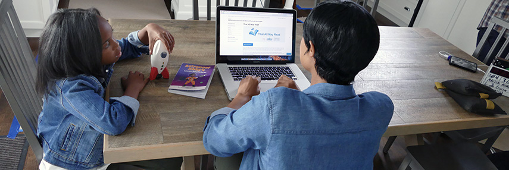

If you live in the United States, its territories, or the District of Columbia, your network library is there to help. Visit Find Your Library for contact information. If answers cannot be obtained locally, please direct questions to NLS.
-
- General: [email protected]
- BARD support: [email protected]
- Technical Help with BARD and NLS Equipment
- BEP Currency Reader: [email protected]
- Braille: [email protected]
- Machine repair parts: [email protected]
- Machine repair in the United States is provided by a network library: Find a Library
- Music Section: [email protected]
- Overseas Service: [email protected]
- Reference: [email protected]
- Telephone: 202-707-5100
- Toll-free: 800-424-8567
- Fax: 202-707-0712
- NLS website homepage
- NLS Facebook page
- That All May Read website
- Information request form
Mailing Address:
The National Library Service for the Blind and Print Disabled
Library of Congress
Washington, DC 20542-4962
Street Address:
1291 Taylor Street, NW
Washington, DC 20542